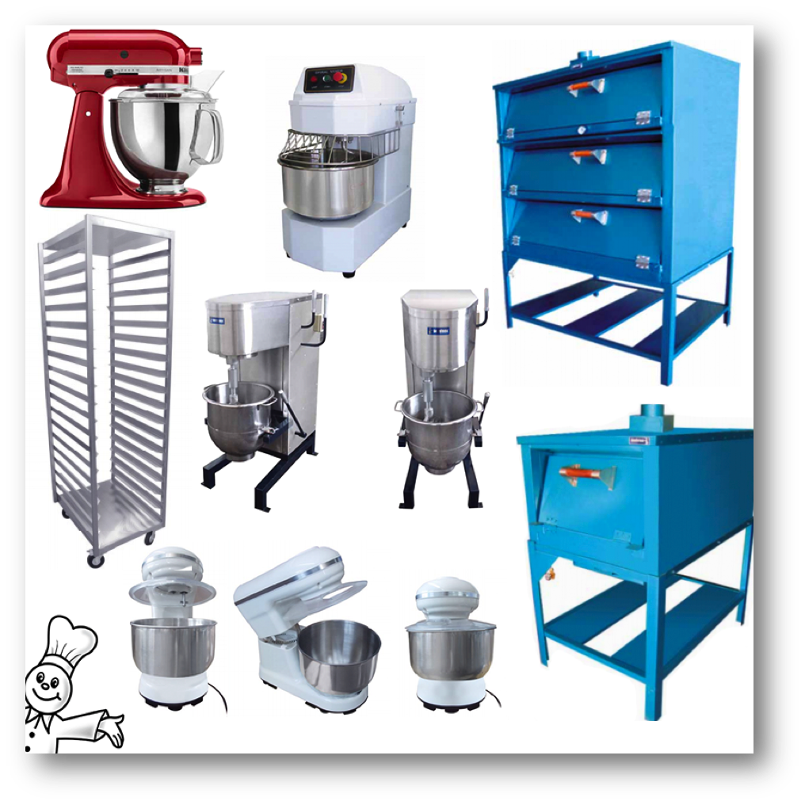

Equipo de reposteria
Para elaborar tus creaciones reposteras es importante que tengas el equipo y maquinaria adecuados, de esta forma podrás facilitar tu trabajo y cumplir muchas funciones. Conforme avances en tu práctica notarás que existe una amplia diversidad de instrumentos tradicionales, manuales, eléctricos y modernos como:
baterías de cocina,
herramientas manuales;
instrumentos de medición;
equipo menor, y
equipo mayor
